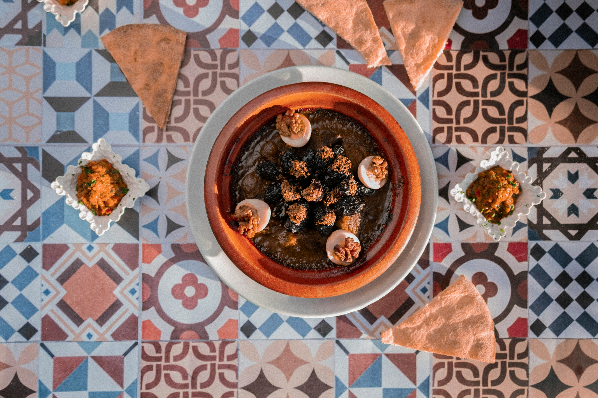
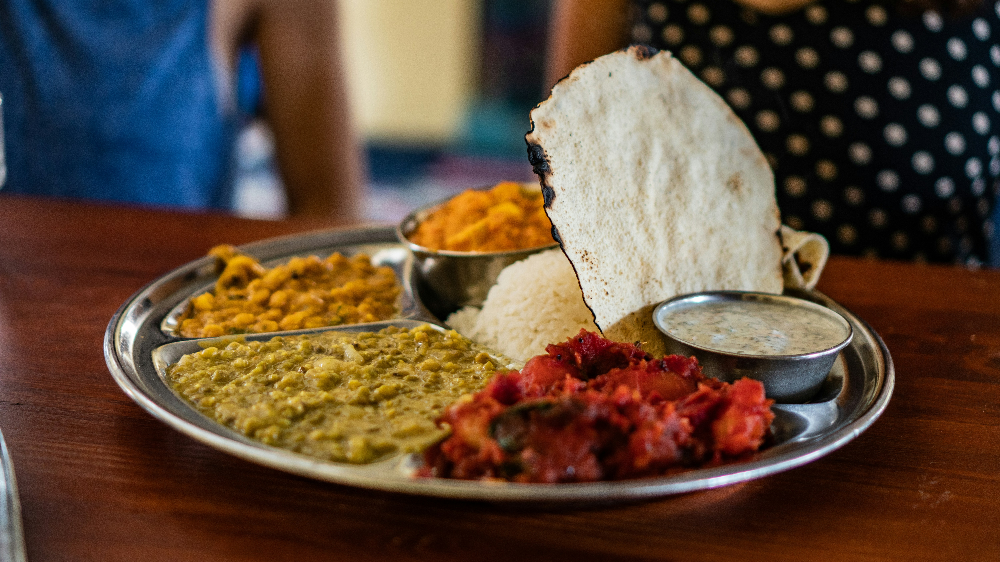
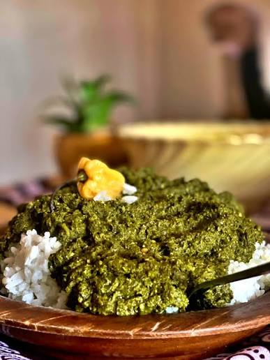

Welcome to Tastes of Africa
From smoky jollof to fragrant tagines, explore the flavors, ingredients, and stories behind Africa's food.
Featured Dishes



Explore by Region
West Africa
Bold, spicy, and built around rice, yams, and scotch bonnet peppers.
Explore West AfricaNorth Africa
Aromatic couscous, tagines, and the warm spice blend ras el hanout.
Explore North AfricaLatest Food Trends
Ancient Grains Are Back
Chefs worldwide are rediscovering teff, fonio, and sorghum for their nutrition and sustainability.
Street Food Goes Global
African street classics like suya and chapati are appearing on menus from London to New York.
Plant-Based African Cooking
Traditional dishes built on cassava leaves, beans, and peanuts are inspiring new vegan cuisine.